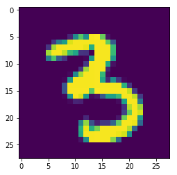
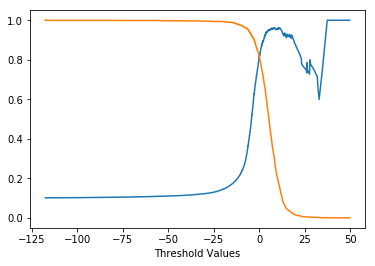

More Evaluation Metrics¶
- Precision/Recall Curves
- ROC and AUC
- Multiclass Evaluation
| Recall Oriented Task | Precision Oriented Task |
|---|---|
| Tumor Detection | Search Engine Results |
In [1]:
%matplotlib inline
import matplotlib.pyplot as plt
import numpy as np
import pandas as pd
from sklearn.datasets import load_breast_cancer, fetch_mldata
from sklearn.model_selection import train_test_split
Adapting the Classifier¶
Depending on the application, we may want to change the classifier and its threshold for class membership. Here, we look at the ability of the classifier to detect 3’s and discuss how we might be interested in changing the threshold.
In [2]:
digits = fetch_mldata('MNIST original')
In [3]:
X = digits.data
y = digits.target
X_test, X_train, y_test, y_train = train_test_split(X, y)
In [4]:
from sklearn.model_selection import cross_val_score
In [5]:
y_train = (y_train == 3)
y_test = (y_test == 3)
In [6]:
from sklearn.linear_model import LogisticRegression
In [7]:
lgr = LogisticRegression()
In [8]:
cross_val_score(lgr, X_train, y_train, cv = 3, scoring = 'accuracy')
Out[8]:
array([0.9598903 , 0.96296931, 0.96434082])
In [13]:
lgr.fit(X_train, y_train)
Out[13]:
LogisticRegression(C=1.0, class_weight=None, dual=False, fit_intercept=True,
intercept_scaling=1, max_iter=100, multi_class='ovr', n_jobs=1,
penalty='l2', random_state=None, solver='liblinear', tol=0.0001,
verbose=0, warm_start=False)
In [57]:
lgr.predict(X_train[312].reshape(1,-1))
Out[57]:
array([ True])
In [59]:
y_score = lgr.decision_function(X_train[312].reshape(1,-1))
In [56]:
plt.imshow(X_train[312].reshape(28,28))
Out[56]:
<matplotlib.image.AxesImage at 0x116c7b080>

In [60]:
threshold = 0
y_digit_predict = (y_score > threshold)
y_digit_predict
Out[60]:
array([ True])
In [61]:
threshold = 2000
y_digit_predict = (y_score > threshold)
y_digit_predict
Out[61]:
array([False])
In [62]:
from sklearn.metrics import precision_recall_curve
In [63]:
y_scores = cross_val_predict(lgr, X_train, y_train, cv = 3, method = 'decision_function')
In [64]:
precisions, recalls, thresholds = precision_recall_curve(y_train, y_scores)
In [65]:
plt.plot(thresholds, precisions[:-1], label = 'Precision')
plt.plot(thresholds, recalls[:-1], label = 'Recall')
plt.xlabel('Threshold Values')
Out[65]:
Text(0.5,0,'Threshold Values')

In [67]:
from sklearn.metrics import confusion_matrix
Cancer Example¶
We want to explore a classification problem using breast cancer data. Here, our goal is to classify a tumor as malignant or not based on measurements of the tumor. In this example, we want to consider the nature of the classifier examined, and determine how to alter the boundary to better the classifier to our liking.
- Load and examine data
- Compare
LogisticRegression,SGDClassifier, and aDummyClassifier - Examine Precision vs. Recall curve
- Examine ROC Curve
- Shift Decision Boundary and evaluate
In [69]:
cancer = load_breast_cancer()
In [70]:
print(cancer.DESCR)
Breast Cancer Wisconsin (Diagnostic) Database
=============================================
Notes
-----
Data Set Characteristics:
:Number of Instances: 569
:Number of Attributes: 30 numeric, predictive attributes and the class
:Attribute Information:
- radius (mean of distances from center to points on the perimeter)
- texture (standard deviation of gray-scale values)
- perimeter
- area
- smoothness (local variation in radius lengths)
- compactness (perimeter^2 / area - 1.0)
- concavity (severity of concave portions of the contour)
- concave points (number of concave portions of the contour)
- symmetry
- fractal dimension ("coastline approximation" - 1)
The mean, standard error, and "worst" or largest (mean of the three
largest values) of these features were computed for each image,
resulting in 30 features. For instance, field 3 is Mean Radius, field
13 is Radius SE, field 23 is Worst Radius.
- class:
- WDBC-Malignant
- WDBC-Benign
:Summary Statistics:
===================================== ====== ======
Min Max
===================================== ====== ======
radius (mean): 6.981 28.11
texture (mean): 9.71 39.28
perimeter (mean): 43.79 188.5
area (mean): 143.5 2501.0
smoothness (mean): 0.053 0.163
compactness (mean): 0.019 0.345
concavity (mean): 0.0 0.427
concave points (mean): 0.0 0.201
symmetry (mean): 0.106 0.304
fractal dimension (mean): 0.05 0.097
radius (standard error): 0.112 2.873
texture (standard error): 0.36 4.885
perimeter (standard error): 0.757 21.98
area (standard error): 6.802 542.2
smoothness (standard error): 0.002 0.031
compactness (standard error): 0.002 0.135
concavity (standard error): 0.0 0.396
concave points (standard error): 0.0 0.053
symmetry (standard error): 0.008 0.079
fractal dimension (standard error): 0.001 0.03
radius (worst): 7.93 36.04
texture (worst): 12.02 49.54
perimeter (worst): 50.41 251.2
area (worst): 185.2 4254.0
smoothness (worst): 0.071 0.223
compactness (worst): 0.027 1.058
concavity (worst): 0.0 1.252
concave points (worst): 0.0 0.291
symmetry (worst): 0.156 0.664
fractal dimension (worst): 0.055 0.208
===================================== ====== ======
:Missing Attribute Values: None
:Class Distribution: 212 - Malignant, 357 - Benign
:Creator: Dr. William H. Wolberg, W. Nick Street, Olvi L. Mangasarian
:Donor: Nick Street
:Date: November, 1995
This is a copy of UCI ML Breast Cancer Wisconsin (Diagnostic) datasets.
https://goo.gl/U2Uwz2
Features are computed from a digitized image of a fine needle
aspirate (FNA) of a breast mass. They describe
characteristics of the cell nuclei present in the image.
Separating plane described above was obtained using
Multisurface Method-Tree (MSM-T) [K. P. Bennett, "Decision Tree
Construction Via Linear Programming." Proceedings of the 4th
Midwest Artificial Intelligence and Cognitive Science Society,
pp. 97-101, 1992], a classification method which uses linear
programming to construct a decision tree. Relevant features
were selected using an exhaustive search in the space of 1-4
features and 1-3 separating planes.
The actual linear program used to obtain the separating plane
in the 3-dimensional space is that described in:
[K. P. Bennett and O. L. Mangasarian: "Robust Linear
Programming Discrimination of Two Linearly Inseparable Sets",
Optimization Methods and Software 1, 1992, 23-34].
This database is also available through the UW CS ftp server:
ftp ftp.cs.wisc.edu
cd math-prog/cpo-dataset/machine-learn/WDBC/
References
----------
- W.N. Street, W.H. Wolberg and O.L. Mangasarian. Nuclear feature extraction
for breast tumor diagnosis. IS&T/SPIE 1993 International Symposium on
Electronic Imaging: Science and Technology, volume 1905, pages 861-870,
San Jose, CA, 1993.
- O.L. Mangasarian, W.N. Street and W.H. Wolberg. Breast cancer diagnosis and
prognosis via linear programming. Operations Research, 43(4), pages 570-577,
July-August 1995.
- W.H. Wolberg, W.N. Street, and O.L. Mangasarian. Machine learning techniques
to diagnose breast cancer from fine-needle aspirates. Cancer Letters 77 (1994)
163-171.
In [71]:
from sklearn.linear_model import LogisticRegression, SGDClassifier
from sklearn.dummy import DummyClassifier
In [72]:
cancer.target
Out[72]:
array([0, 0, 0, 0, 0, 0, 0, 0, 0, 0, 0, 0, 0, 0, 0, 0, 0, 0, 0, 1, 1, 1,
0, 0, 0, 0, 0, 0, 0, 0, 0, 0, 0, 0, 0, 0, 0, 1, 0, 0, 0, 0, 0, 0,
0, 0, 1, 0, 1, 1, 1, 1, 1, 0, 0, 1, 0, 0, 1, 1, 1, 1, 0, 1, 0, 0,
1, 1, 1, 1, 0, 1, 0, 0, 1, 0, 1, 0, 0, 1, 1, 1, 0, 0, 1, 0, 0, 0,
1, 1, 1, 0, 1, 1, 0, 0, 1, 1, 1, 0, 0, 1, 1, 1, 1, 0, 1, 1, 0, 1,
1, 1, 1, 1, 1, 1, 1, 0, 0, 0, 1, 0, 0, 1, 1, 1, 0, 0, 1, 0, 1, 0,
0, 1, 0, 0, 1, 1, 0, 1, 1, 0, 1, 1, 1, 1, 0, 1, 1, 1, 1, 1, 1, 1,
1, 1, 0, 1, 1, 1, 1, 0, 0, 1, 0, 1, 1, 0, 0, 1, 1, 0, 0, 1, 1, 1,
1, 0, 1, 1, 0, 0, 0, 1, 0, 1, 0, 1, 1, 1, 0, 1, 1, 0, 0, 1, 0, 0,
0, 0, 1, 0, 0, 0, 1, 0, 1, 0, 1, 1, 0, 1, 0, 0, 0, 0, 1, 1, 0, 0,
1, 1, 1, 0, 1, 1, 1, 1, 1, 0, 0, 1, 1, 0, 1, 1, 0, 0, 1, 0, 1, 1,
1, 1, 0, 1, 1, 1, 1, 1, 0, 1, 0, 0, 0, 0, 0, 0, 0, 0, 0, 0, 0, 0,
0, 0, 1, 1, 1, 1, 1, 1, 0, 1, 0, 1, 1, 0, 1, 1, 0, 1, 0, 0, 1, 1,
1, 1, 1, 1, 1, 1, 1, 1, 1, 1, 1, 0, 1, 1, 0, 1, 0, 1, 1, 1, 1, 1,
1, 1, 1, 1, 1, 1, 1, 1, 1, 0, 1, 1, 1, 0, 1, 0, 1, 1, 1, 1, 0, 0,
0, 1, 1, 1, 1, 0, 1, 0, 1, 0, 1, 1, 1, 0, 1, 1, 1, 1, 1, 1, 1, 0,
0, 0, 1, 1, 1, 1, 1, 1, 1, 1, 1, 1, 1, 0, 0, 1, 0, 0, 0, 1, 0, 0,
1, 1, 1, 1, 1, 0, 1, 1, 1, 1, 1, 0, 1, 1, 1, 0, 1, 1, 0, 0, 1, 1,
1, 1, 1, 1, 0, 1, 1, 1, 1, 1, 1, 1, 0, 1, 1, 1, 1, 1, 0, 1, 1, 0,
1, 1, 1, 1, 1, 1, 1, 1, 1, 1, 1, 1, 0, 1, 0, 0, 1, 0, 1, 1, 1, 1,
1, 0, 1, 1, 0, 1, 0, 1, 1, 0, 1, 0, 1, 1, 1, 1, 1, 1, 1, 1, 0, 0,
1, 1, 1, 1, 1, 1, 0, 1, 1, 1, 1, 1, 1, 1, 1, 1, 1, 0, 1, 1, 1, 1,
1, 1, 1, 0, 1, 0, 1, 1, 0, 1, 1, 1, 1, 1, 0, 0, 1, 0, 1, 0, 1, 1,
1, 1, 1, 0, 1, 1, 0, 1, 0, 1, 0, 0, 1, 1, 1, 0, 1, 1, 1, 1, 1, 1,
1, 1, 1, 1, 1, 0, 1, 0, 0, 1, 1, 1, 1, 1, 1, 1, 1, 1, 1, 1, 1, 1,
1, 1, 1, 1, 1, 1, 1, 1, 1, 1, 1, 1, 0, 0, 0, 0, 0, 0, 1])
In [73]:
from sklearn.model_selection import train_test_split
from sklearn.metrics import confusion_matrix, classification_report
In [74]:
X_train, X_test, y_train, y_test = train_test_split(cancer.data, cancer.target)
In [75]:
lgr = LogisticRegression()
lgr.fit(X_train, y_train)
lg_pred = lgr.predict(X_train)
print(confusion_matrix(y_train, lg_pred))
print(classification_report(y_train, lg_pred))
[[147 12]
[ 11 256]]
precision recall f1-score support
0 0.93 0.92 0.93 159
1 0.96 0.96 0.96 267
avg / total 0.95 0.95 0.95 426
In [76]:
from sklearn.model_selection import cross_val_predict
In [77]:
lgr_scores = cross_val_predict(lgr, X_train, y_train, cv = 5, method = 'decision_function')
In [78]:
lgr_scores[:10]
Out[78]:
array([ 2.49086543, 2.65844298, -34.60993702, 2.70585748,
-9.81443622, 3.94622525, -0.41754027, 0.62997247,
-17.25115271, 5.51879887])
Comparing Precision and Recall¶
We can visualize the changes that occur accross these metrics together. To begin, we plot the
In [97]:
from sklearn.metrics import precision_recall_curve, roc_curve, roc_auc_score, auc
In [98]:
%matplotlib notebook
In [104]:
from sklearn.metrics import precision_recall_curve
lgr.fit(X_train, y_train)
Out[104]:
LogisticRegression(C=1.0, class_weight=None, dual=False, fit_intercept=True,
intercept_scaling=1, max_iter=100, multi_class='ovr', n_jobs=1,
penalty='l2', random_state=None, solver='liblinear', tol=0.0001,
verbose=0, warm_start=False)
In [109]:
y_scr = cross_val_predict(lgr, X_train, y_train, cv = 3, method = 'decision_function')
y_scr.shape
Out[109]:
(1347, 10)
In [108]:
precision_recall_curve?
In [110]:
y_train.shape
Out[110]:
(1347,)
In [87]:
plt.figure(figsize = (7, 7))
plt.xlim([0.0, 1.01])
plt.ylim([0.0, 1.01])
plt.plot(precision, recall, label='Precision-Recall Curve')
plt.plot(closest_zero_p, closest_zero_r, 'o', markersize = 12, fillstyle = 'none', c='r', mew=3)
plt.xlabel('Precision', fontsize=16)
plt.ylabel('Recall', fontsize=16)
![]()
Out[87]:
Text(0,0.5,'Recall')
In [88]:
y_score_lr = lgr.fit(X_train, y_train).decision_function(X_test)
fpr_lr, tpr_lr, _ = roc_curve(y_test, y_score_lr)
roc_auc_lr = auc(fpr_lr, tpr_lr)
plt.figure(figsize = (10, 7))
plt.xlim([-0.01, 1.00])
plt.ylim([-0.01, 1.01])
plt.plot(fpr_lr, tpr_lr, lw=3, label='LogRegr ROC curve (area = {:0.2f})'.format(roc_auc_lr))
plt.xlabel('False Positive Rate', fontsize=16)
plt.ylabel('True Positive Rate', fontsize=16)
plt.title('ROC curve (Cancer Data)', fontsize=16)
plt.legend(loc='lower right', fontsize=13)
plt.plot([0, 1], [0, 1], color='navy', lw=3, linestyle='--')
![]()
Out[88]:
[<matplotlib.lines.Line2D at 0x119a95c88>]
Other Classifiers¶
In [89]:
sgd = SGDClassifier(max_iter=1000)
sgd.fit(X_train, y_train)
sgd_pred = sgd.predict(X_train)
print(confusion_matrix(y_train, sgd_pred))
print(classification_report(y_train, sgd_pred))
[[136 23]
[ 9 258]]
precision recall f1-score support
0 0.94 0.86 0.89 159
1 0.92 0.97 0.94 267
avg / total 0.93 0.92 0.92 426
In [90]:
dum = DummyClassifier(strategy='most_frequent')
dum.fit(X_train, y_train)
dum_pred = dum.predict(X_train)
print(confusion_matrix(y_train, dum_pred))
print(classification_report(y_train, dum_pred))
[[ 0 159]
[ 0 267]]
precision recall f1-score support
0 0.00 0.00 0.00 159
1 0.63 1.00 0.77 267
avg / total 0.39 0.63 0.48 426
/anaconda3/lib/python3.6/site-packages/sklearn/metrics/classification.py:1135: UndefinedMetricWarning: Precision and F-score are ill-defined and being set to 0.0 in labels with no predicted samples.
'precision', 'predicted', average, warn_for)
Digits and Multi-Class Classification¶
What are the difficult digits to see?
In [91]:
from sklearn.datasets import load_digits
import seaborn as sns
dataset = load_digits()
X, y = dataset.data, dataset.target
In [92]:
lgr.fit(X, y)
Out[92]:
LogisticRegression(C=1.0, class_weight=None, dual=False, fit_intercept=True,
intercept_scaling=1, max_iter=100, multi_class='ovr', n_jobs=1,
penalty='l2', random_state=None, solver='liblinear', tol=0.0001,
verbose=0, warm_start=False)
In [93]:
from sklearn.model_selection import train_test_split
In [94]:
X_train, X_test, y_train, y_test = train_test_split(X, y)
In [95]:
lgr.fit(X_train, y_train)
lg_pred = lgr.predict(X_test)
mat = confusion_matrix(y_test, lg_pred)
plt.figure(figsize = (12, 9))
sns.heatmap(mat, annot = True,fmt="d", cmap="viridis", alpha = 0.6)
![]()
Out[95]:
<matplotlib.axes._subplots.AxesSubplot at 0x11a0dbba8>
In [96]:
print(classification_report(y_test, lg_pred))
precision recall f1-score support
0 1.00 1.00 1.00 42
1 0.98 0.98 0.98 42
2 1.00 0.98 0.99 52
3 0.96 0.88 0.92 52
4 0.96 0.98 0.97 47
5 1.00 0.91 0.95 46
6 1.00 0.96 0.98 52
7 0.92 0.95 0.93 37
8 0.83 0.95 0.89 41
9 0.88 0.95 0.91 39
avg / total 0.96 0.95 0.95 450